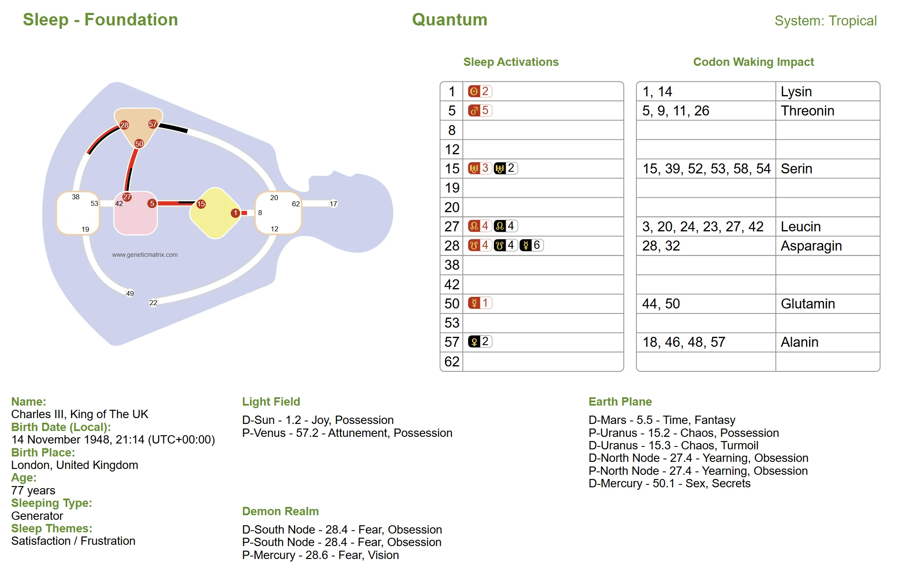

You spend a third of your life asleep, and you are being conditioned the entire time. Learn what shapes your nights, why dreams are not personal, and how sleeping correctly supports living your design.
In Human Design, your Bodygraph describes who you are while you are awake: your Type, Authority, Channels, Gates, and Centers. But the moment you fall asleep, everything changes. Your crystals of consciousness shift their receptive orientation, and you enter a completely different programming state. That state has its own design. That is your Sleep Design.
While your waking design operates through 64 Gates and a complex system of Channels and circuits, your Sleep Design operates through only 15 Gates arranged in 3 distinct circuits. It is a dramatically reduced matrix, and the basis of all mammalian design, rather than your fully awakened human form. There is no Ego Center active, no Solar Plexus, and no mind taking notes. You are, in the truest sense, defenseless against the programming of the night.
And that programming serves a very specific purpose: it conditions you for the next day. What you experience as a dream is only the tip of the iceberg, a tiny fragment that filters up to your conscious mind upon waking. Underneath, vast amounts of information are fed into your system chemically, reshaping how your mind and body will engage with the world when you open your eyes.
Key Insight
Your Sleep Design reveals how you are uniquely programmed while unconscious: the forces acting on you, the themes shaping your dream life, and the conditioning you carry into each waking day.
Your waking Human Design is calculated using the Sun. Specifically, the Design calculation is derived from a retrograde of 88 degrees of the Sun's movement from the moment of birth. Your Sleep Design works differently. Here, the calculation goes back 88 degrees of the Moon's movement. Because the Moon moves much faster than the Sun, this covers only a few days rather than roughly 88 days.
The result is a different set of activations. Gates that may not appear in your waking design can suddenly appear, and Gates you rely on during the day may be absent. The Moon rules the night, just as the Sun rules the day. Your Sleep Design is a lunar creature with its own architecture, its own vulnerabilities, and its own story.
Your Sleep Design is programmed through 3 distinct forces. Each has its own circuit of 5 Gates, its own agenda, and its own way of conditioning you while you are unconscious.
But remember: everything in Human Design is a duality. For the not-self, these domains are part of a conditioning program that keeps you locked into the homogenized world. But if you follow your inner Authority while awake, and stop letting your mind run the show, the sleep state begins to change. It starts to serve you. The dreams become valuable. The information becomes useful.
The Light Field is the domain of Personality consciousness, programmed by the Personality crystal bundles that surround the earth. This is yang conditioning, and it's the only domain that touches the collective Personality consciousness field during sleep.
Its five gates form what resembles the Knowing Circuit in your waking design: a deeply individual, mutative stream. This is knowing energy, which is really about hearing. These are not visual dreams in the conventional sense. These are dreams rooted in frequency, in sound, in the sudden shock of awareness.
And don't be fooled by the name. The Light Field is often more frightening than the Demon Realm. The Light Field hates the body. It wants to be free of form, free of the physical. There is always a fight between the Light Field and the Demon Realm: the Light Field saying "don't worry about the body, be free of it" and the Demon Realm saying "there is only joy if you accept the physical form."
Love
Sight
Attunement
Darkness
Joy
Gate 20, Sight: In the waking design this is about being in the now. In sleep it becomes sight that you hear, a knowing frequency. High-REM activity, rapid eye movement, tremendous inner processing, but the real information is carried in the frequency, not the picture.
Gate 57, Attunement: Again, this is hearing. You are immersed in the dream state itself, attuned to whatever is happening, navigating through it on an intuitive frequency. That gasp-awake-at-3am experience? Often the 57 at work.
Gate 8, Darkness: Without darkness there is no light. This gate conditions you at the deepest level to seek the light. The dreams themselves are dark, frightening, disorienting. That's how the conditioning works: scare you in the dark so you spend your waking life desperately chasing the light.
Gate 1, Joy: The creative expression of the Light Field, carrying the frequency of the creative drive. But joy in sleep is found through its opposite. These dreams can be deeply uncomfortable precisely because they're pushing toward something the Personality yearns for but cannot grasp while unconscious.
Gate 62, Love: The portal gate of the Light Field, the cross-species bridging gate connecting the mammalian and human frequencies. The real information here is love in the details: the organizing force of consciousness while you sleep.
The Light Field cannot be improved by changing what you eat. It is shaped by whether you love yourself, by whether you live as yourself while awake. Self-love is the only antidote to the Light Field's conditioning.
The Earth Plane is perhaps the strangest of the three domains. While you sleep, these gates receive the filtered neutrino information from every human being on the planet who is currently awake. You're absorbing the consciousness field of waking humanity: its anger, its frustration, its bitterness, its desperation, its yearning. All blended together and poured into you.
This is the domain most closely associated with the concept of the "astral plane." It is the source of the most chaotic, disturbing, and emotionally charged dreams. It is also the domain whose dreams are meant to be shared. Earth Plane dreams are collective dreams. Some ancient tribes understood this and would sit around every morning sharing what they dreamed.
Chaos
Time
Sex
Yearning
Mutation
Gate 15, Chaos: Dreams where things are jumbled together that don't belong together. Bizarre combinations, distorted patterns. This is the deep rhythm of humanity's collective extremes pouring through you.
Gate 5, Time: Time distortion dreams. Objects, people, and places pulled from different periods and reassembled together. The program uses all available material to construct the distortion.
Gate 50, Sex: The most disturbed frequency on the Earth Plane. It's the way in which the entire sexual drive of humanity is renewed in your system while you sleep.
Gate 27, Yearning: This creates a deep longing for something and you don't know what it is. You wake up with a restlessness, a dissatisfaction, a sense that something is missing.
Gate 12, Mutation: The portal gate of the Earth Plane, carrying the mutative potential. You wake up with a solution you didn't go to sleep looking for. Simultaneity, invention, the flash of insight.
Earth Plane dreams are intended to be shared. If you carry strong Earth Plane activations in your Sleep Design, your dreams aren't just for you. They're collective. Share them. Someone else may recognize the value in them that you can't see.
Don't let the name fool you. The Demon Realm is programmed by the Design crystal bundle, the force from within the earth itself. Despite its dramatic label, it's actually the domain most directly responsible for maintaining and regenerating your physical body during sleep. This is form principle programming.
When this domain functions correctly, the body is replenished, repaired, and prepared for the next day. When it doesn't (usually because of incorrect diet) the dreams become frightening, aggressive, and physically disturbing. A correctly nourished Demon Realm is the source of the most physically regenerative sleep you can have.
Environments
Flight
Dying
Fear
Aggression
Gate 19, Environments: The key gate and portal of the Demon Realm. Dreams where you're in a room and you don't know why, where environments shift from terrifying to joyful. The quality of the environment directly reflects the quality of your digestion.
Gate 53, Flight: Flying dreams and falling dreams both live here. This is the call of gravity, the entrapment of form, and ultimately the surrender to one's physical body. Correct diet transforms these dreams entirely.
Gate 42, Dying: Death dreams, often most common in childhood. Deeply connected to the genetic imperative and the body's renewal cycle. These dreams aren't psychological. They're physiological signals.
Gate 28, Fear: You wake in a cold sweat, overwhelmed with fear about something physical. This is the body telling you it's not functioning correctly. Fear dreams in the Demon Realm are a direct signal: the diet needs attention.
Gate 38, Aggression: Violent dreams. Violence committed against you or by you. When the digestive system is corrected, the aggression disappears and transforms into something entirely different.
Disturbing dreams from the Demon Realm aren't psychological problems. They're dietary ones. Fix what you eat, when you eat, and how you eat, and the nightmares resolve. This is the direct domain of your body's physical design and dietary transformation (PHS).
Every line in every hexagram has an awake value and a sleeping value. These sleeping values are encoded in the chemistry itself, activated when the Moon takes over from the Sun as the driving programming force. They reveal the archetypal dramas that play out in your dream life.
Line 1: Secrets
Data, facts, or truths that didn't reach you while awake. Or information being implanted so you'll recognize it when it emerges.
Line 2: Possession
Dreams of holding on, being held, or the fear of losing something. The program instilling the drive to possess, to not let go.
Line 3: Turmoil
We are programmed for turmoil. When everything is locked in and reliable, it's a sign things are dying. The third line shakes things up in the dream state.
Line 4: Obsession
The relentless push behind the opportunist. While asleep, they're being fueled with the obsessive drive that keeps them going despite physical vulnerability.
Line 5: Fantasy
Bizarre, beautiful, fairytale dreams. Science fiction landscapes. The 5th line embodies the most fantastical of dream experiences.
Line 6: Vision
The capacity to see what has not yet been seen, what will emerge. In certain gates, the 6th line carries extraordinary potential for prophetic sight.
The distribution of Types in the Sleep Design is completely different from waking life. While Generators make up roughly 67-68% of the waking population, they represent only about 18% of sleepers. The tables are turned: approximately 60% of the sleeping population are Reflectors. The non-energy Types rule the night.
This makes sense from the program's perspective. The ideal sleeping state is one of total openness and non-interference from the Personality, which is exactly what a Reflector provides. Most of us become either a Reflector or a Projector in our Sleep Design.
All five Types are possible in the Sleep Design. You can be a sleeping Generator if the Sacral is defined, a sleeping Projector with a motor-to-Throat connection that doesn't involve the Sacral, and even (rarely) a sleeping Manifestor. If you're a sleeping Generator, your Sacral is being stimulated all night. If you're not entering the day correctly, you'll feel like you were working all night.
Generators & Manifesting Generators: Go to sleep when you're exhausted, when the Sacral energy is fully spent. Not sooner, not later. The body knows when it's ready.
Projectors, Manifestors & Reflectors: Going to sleep is a stage-by-stage process. Get into a horizontal position before sleep actually comes. Let the transition happen gradually.
All Types: Sleep in your own aura. When you sleep in someone else's aura, you don't just absorb their dream themes. You take on their mechanical conditioning. Their defined centers activate your dormant gates, potentially turning on channels and centers that wouldn't otherwise be active in your Sleep Design. Aura is an electromagnetic field. It goes through walls.
Each domain has a special gate that acts as a bridging portal, a cross-species connection between the mammalian and human dimensions. These portals are how dream information can actually cross from the sleep state into waking consciousness.
Most of what we experience in sleep never makes it to our waking awareness intact. But the portal gates can jump dimensions. They carry information across the sleep-wake boundary with a fidelity that the other gates cannot.
Light Field Portal: Gate 62
Information carried by sound and frequency. If the right sound or frequency is present when you wake, the dream information can be released.
Earth Plane Portal: Gate 12
The waking solution. You simply wake up with an answer. No memory of dreaming about it, no dramatic vision. Just a sudden knowing. This is the mutative bridge.
Demon Realm Portal: Gate 19
Food for thought, literally. The information doesn't arrive until you start eating. You sit down for breakfast, and the moment food enters your mouth, something is released.
One of the most practical insights from Sleep Design is the direct relationship between what you eat and how you dream. This isn't metaphorical. It's mechanical.
The Demon Realm is entirely dominated by the form principle, and the form principle runs on food. If your digestive process is not correct, the frequency of your body is distorted. That distortion shows up directly in your Demon Realm dream experience as nightmares, aggressive dreams, dying dreams, and environments that haunt you.
The relationship is so direct that disturbed dreams in children with strong Demon Realm activations can often be traced straight to what they're being fed. Change the food, and the dreams change.
This is where your body transformation (also known as PHS or physical design) becomes essential. It identifies your correct dietary regimen: not just what to eat, but how, when, and under what conditions.
Advanced & Pro Feature
Your dietary design information is available in your Genetic Matrix chart. Understanding your body's physical design is the single most impactful thing you can do for your Sleep Design, especially if you carry Demon Realm activations.
When you eat close to bedtime and your body is still digesting as you fall asleep, the frequency of that unfinished digestive process directly affects your Demon Realm experience. If the food is wrong for your design, you get the lowest-common-denominator version of your dream life.
People who wake up exhausted, who feel like they've been working all night, who have unusual appetites or unexplained nervousness in the morning: all of this can be connected to Demon Realm disturbance.
When the digestive system is correct, the Demon Realm becomes what it's actually designed to be: a regenerative force that maintains your body and sends you into the next day with genuine vitality.
There is no Strategy and Authority in sleep. There is no mind. The moment you lose consciousness, you have no capacity to protect yourself from the conditioning that floods in. You're helpless. That's not a problem. It's simply the design.
But you can live correctly while awake. And that's the only thing that matters.
How you enter sleep sets the entire foundation for what you receive during the night. Going to sleep correctly means entering the dream state with a relaxed digestive system, a properly nourished body, and (critically) sleeping in your own aura.
The moment you wake, everything from the night floods into your full system through genetic continuity. If you wake up and immediately let your mind take over, the dream programming has you. The frequency the Earth Plane installed overnight takes root in a disturbed mind.
The antidote is the same as it always is in Human Design: Strategy and Authority. From the moment you open your eyes, the practice is to operate as yourself. Not from the mind. Not from the not-self themes that were pumped into you all night.
Key Insight
You can only live your life correctly while you're awake. The dream state programs you. The waking state is where you have the power to not be controlled by it. Every morning is the first day of your experiment.
You are never just your Sleep Design. Every night, the transit field overlays your fixed sleep activations with whatever is moving through the wheel right now. The transiting planets activate gates in the sleep matrix just as they do in your waking design.
This is why you don't have the same dreams every night. Your Sleep Design is the foundation, but the transits are the variable. Look at the Genetic Matrix transit chart and you can actually predict the themes of the dreams you're likely to have.
And here's where sleeping with another person compounds the problem. Their aura can turn on centers in your sleep matrix that aren't normally active. Once those centers are active, they become receptive to transit gates that would otherwise have passed through you without effect.
The layers of conditioning stack: your fixed Sleep Design, plus the nightly transit field, plus the aura of anyone sleeping near you. Each layer amplifies the others. This is why sleep is the deepest conditioning you receive.
This may be the most difficult thing to accept about Sleep Design: your dreams are not about you. They are the work of the program. The archetypes, the drama, the emotional intensity: all of it is programming, not personal revelation. There is no mind active in the Sleep Design.
What you remember of a dream when you wake is not what actually happened while you were sleeping. It's a heavily filtered, chemically transduced fragment that has been repackaged by your waking mind into something that looks personal. But it isn't.
Traditional dream analysis has always tried to pin dreams on personal psychology. Sleep Design reveals this for what it is: a fundamental misunderstanding of the mechanism. You're having aggressive dreams because of what you ate for dinner, not because of your relationship with your mother.
The only exception is the portal gates. When a portal gate is active in your Sleep Design, there is a genuine possibility of personal, multidimensional information crossing from sleep to waking. But even then, the information arrives as a frequency signal: a waking solution, a physical knowing, or a triggered realisation.
A Sleep Design chart looks similar to your waking Bodygraph, but it only contains the 15 gates that are active during sleep, arranged in the three domain circuits. Here's what each part of the chart tells you.
The chart shows the same centers as your waking design, but only the 15 sleep gates appear. Definition on the chart reveals which domain circuits are lit up and creating channels. The rest of the chart is open, receptive to conditioning from transits and from the aura of anyone sleeping nearby.
Your sleeping Type may be different from your waking Type. A waking Projector might be a sleeping Generator with a defined Sacral, or a waking Generator might become a sleeping Reflector with completely open centers. This affects whether your body is being stimulated all night or resting in total openness.
The activations table shows which of the 15 possible gates are active in your Sleep Design, along with which planets activate them and which lines are involved. Each activation carries its own line value (Secrets, Possession, Turmoil, Obsession, Fantasy, or Vision).
This column reveals how your sleep programming enters your waking body. Each active gate connects to specific codons, amino acid chains that carry the dream information through genetic continuity into your full system when you wake up.
The chart identifies which of the three domains are active and the specific gate-line-planet combinations within each:
Light Field
Gates 62, 20, 57, 8, 1. Personality crystal programming through knowing/hearing frequency.
Demon Realm
Gates 19, 53, 42, 28, 38. Form maintenance, body regeneration, diet-connected dreams.
Earth Plane
Gates 15, 5, 50, 27, 12. Collective homogenization, waking humanity's consciousness field.
How can a sleep matrix of only 15 gates have such a profound conditioning effect on your full 64-gate waking design? The answer is codon transference.
Every gate in Human Design belongs to a codon group, a family of gates that share the same amino acid coding. When a gate is activated in your Sleep Design, the programming doesn't stay confined to that single gate. When you wake up, the information transfers chemically through the codon family, spreading from one gate to every other gate in the same group.
This is how 15 gates condition 64. The program doesn't need to hit every gate directly. It just needs to hit the right codon families, and the chemistry does the rest.
Gate 27 (Yearning) belongs to the Leucin codon family, which also includes Gates 3, 20, 23, 24, and 42. When Gate 27 is activated in your Sleep Design, the programming crosses into your waking design via codon transference and hits all six gates.
Imagine you have a split definition in your waking design, and the bridge that would complete it is Gate 23. Gate 27 gets activated in your sleep. You wake up, and through codon transference, Gate 23 gets a hit of programming. Now your mind is on fire. It needs that 23.
So you jump into a relationship with someone who carries Gate 23, and they bridge your split, and it feels like wholeness. But it's conditioning. The program set the trap at night.
Key Insight
A single gate activated at night can reach across your entire waking design, hitting open gates, amplifying splits, and feeding the not-self mind exactly what it needs to keep you off track. Seeing the codon trail is the first step to not being blindly controlled by it.
Only on Genetic Matrix
The Codon Waking Impact column is a Genetic Matrix original. It maps the complete chemical trail from your sleep activations into your waking design.
Get Your Full Sleep Design Chart →Your Sleep Design is programming your attraction patterns. The hanging gates in your sleep chart become electromagnetic magnets during your waking day. You are literally being conditioned overnight to seek out specific people.
This is stealth attraction. You don't know why you're drawn to someone. On a waking connection chart, you might not see much. But look at the two sleep designs side by side and there it is: a layer of conditioning pulling you together.
Say you have Gate 50 active in your Sleep Design (the sleeping theme of sex). You wake with a hanging 50 and an unconscious yearning for someone who carries Gate 27. Meanwhile, someone else with Gate 27 active in their Sleep Design has been programmed all night with yearning, pulling them toward anyone carrying the 50.
You meet. Sparks fly. Two sleep designs locking into place. It feels like destiny. Neither of you might even have these gates in your waking design, which is what makes this so disorienting.
But it's just conditioning. And now you're together, sleeping in each other's aura, and their entire design is conditioning your sleep matrix, night after night.
Understanding this doesn't mean you avoid relationships. It means you stop being blindly driven into them by overnight programming. When you can see the hanging gates in your Sleep Design, you can recognize the pull for what it is: conditioning, not destiny.
Key Insight
Your Sleep Design shows you who you're being programmed to chase, and why. The hanging gates are the magnets. The stealth attraction is the trap. Seeing your chart is the first step to making decisions about relationships from your authority, not from your overnight conditioning.
You cannot defeat the program. It programs you while you sleep through three domains. It spreads that programming through codon transference into your waking design. It uses your hanging gates to drive your attractions and locks you into conditioning.
But there is one thing it cannot condition. One thing that remains entirely yours, untouched by the Light Field, the Earth Plane, or the Demon Realm.
Your Strategy and your Inner Authority.
That is the only mechanism in your design that the program cannot reach. Your Sacral response, your emotional wave, your splenic knowing, your ego truth: whatever your Authority is, it operates outside the program's control. It is the one thing that is genuinely yours.
Every not-self decision you make from the mind is a decision made from conditioning. The moment you ignore your mind, ignore your attractions, and follow your Strategy and Authority is the moment you step outside the trap.
“You can only live your life correctly while you're awake. The program conditions everything else. Strategy and Authority is the one door it cannot lock.”
Explore Sleep Design in more depth with these videos from the Genetic Matrix YouTube channel.
Your Sleep Design chart reveals how you are programmed while unconscious. It shows your sleeping Type, the Gates active at night, the 3 dream domains (Light Field, Earth Plane, and Demon Realm) and the themes shaping how you are conditioned in sleep.
Unlike your waking Bodygraph, this chart reflects the reduced nocturnal matrix that operates under lunar programming. It gives you a practical way to explore your sleep activations, portal Gates, and the unconscious patterns influencing how you enter each new day.
Available in Advanced / Pro

Example Sleep Design chart. Click to enlarge.
See your unique Sleep Design: which domains dominate your nights, which gates are active, your sleeping Type, and the complete codon waking impact trail.
Get Pro →